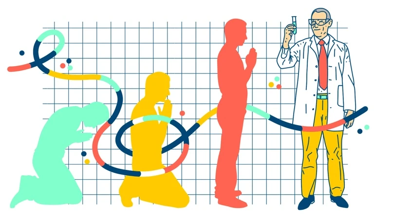

Как наука превратилась в ещё одну религию, откуда в ней взялись собственные юродивые и бесноватые и есть ли разница между речами человека в золотой рясе и субъекта в белом халате — Александр Сорге копается в сознании правоверных атеистов.

Сегодня быть апостолом Фомой, не верующим в бездоказательные чудеса Христа, — это стильно, модно, молодежно аки в 1917 году. Белокаменные храмы, полные чарующих песнопений и сладкого дыма благовоний, все меньше привлекают молодежь, увлеченную научными ересями. Однако правда в том, что наука сегодня для многих превратилась в еще одну религию. А мамкины любители научпопа, считающие 1 апреля профессиональным праздником "верунов", на деле мало отличаются от бабок, преклоняющих колени перед святыми образами.
Сверкающий паровоз и обоссаная вагонетка
Наука нам кажется неиссякаемым источником знаний, правды и истины. Эдаким сверкающим паровозом, отчаянно тянущим обоссаную вагонетку человечества в светлое будущее. А ученые — бравыми кочегарами, которые закидывают в котел куски очищенной истины и уверенно держат поводья железной машины. Точными приборами они прокладывают путь и рассчитывают каждый свой шаг, и нам кажется, что их словам всегда можно доверять. Однако паровоз науки иногда начинает катить совсем не по тем рельсам. 100 лет назад евгеника считалась вполне себе научной теорией не только в нацистской Германии. На волне популярности этого учения в США в начале XX века начали массово вводиться законы о принудительной стерилизации тех, кто мог бы передать "нежелательные" гены потомству: психически больных, людей с низким IQ, а затем преступников и неассимилированных мигрантов. Всего стерилизации подверглось больше 60 тысяч человек. Подобные программы "улучшения генофонда" под радостное одобрение общественности принимались и в таких развитых и демократических странах, как Канада, Франция, Исландия и Швеция. Причем стерилизация продолжалась и после Второй мировой войны.
"Так, в Швеции с 1935-го по 1976 год было принудительно стерилизовано 60 тысяч человек. 11 тысяч прошли недобровольную стерилизацию в Дании и две тысячи в Норвегии; обе страны отменили евгенические законы только во второй половине XX века. Финляндия с 1920-х годов пыталась искоренить глухоту, стерилизуя глухих женщин и запрещая глухим вступать в брак; уже после войны там были насильственно стерилизованы 11 тысяч женщин и сделаны четыре тысячи абортов. Послевоенный евгенический закон Японии привел к стерилизации нескольких тысяч человек и был отменен только в 1994 году".
(Из книги Петра Талантова "0,05. Доказательная медицина от магии до поисков бессмертия")
Другой пример. Сегодня очевидно, что стоит мыть руки перед едой, а тем более перед операцией. Особенно если пять минут назад ты вскрывал сифозного пьянчугу. Однако лет 150 назад было вполне нормальным явлением, что роды принимает патологоанатом сразу после ковыряния в очередном трупе — вытереть руки носовым платком после этого считалось вполне достаточно. Неудивительно, что женская смертность в больницах достигала 30%. Игнац Земмельвейс, врач-акушер, возглавлявший больницу в Пеште, предположил, что, возможно, перед тем как лезть в рожающую женщину, стоит сначала обеззаразить руки — и смертность в его больнице упала в семь раз. Однако герра Земмельвейса подняли на смех: его выгнали из больницы и заточили в психушку, где он вскоре и погиб от "лечения". И сделано это было не под давлением церковников или пустоголовых крестьян, а уважаемого медицинского сообщества Австрии.
Топка, полная дерьма
Бурление и брожение, в ходе которого одни теории изменяются, а другие и вовсе растворяются — нормальный процесс для научного сообщества. Однако этот факт часто упускается комнатными любителями науки, которые превращают относительную истину в истину абсолютную. Не говоря уже о том, что часто каленая истина на поверку оказывается низкокачественным сплавом из плагиата, подтасованных результатов и откровенных домыслов. Даже когда речь идет не о псевдонаучных теориях вроде какой-нибудь торсионной гомеопатии, а об исследованиях, публикуемых в рецензируемых научных журналах.
В середине нулевых выяснилось, что многие публикации о научных открытиях, мягко говоря, лживы. Научным знанием может считаться только то, которое мы можем "воспроизвести": повторить те же действия и получить тот же результат.
Если однажды вам удалось снять девушку фразой "ты не ушиблась, когда свалилась с небес?", это еще не значит, что вы открыли супернадежный способ пикапа, который будет работать всегда и со всеми. А вот применение клофелина и водки — вполне себе научный подход (хоть и не очень нравственный или законный — я предупредил), ведь эффект будет примерно одним и тем же, вне зависимости от количества "экспериментов".
И вот с воспроизводимостью-то в науке все не очень хорошо: ученые не смогли воспроизвести, по различным оценкам, от 51% до 89% результатов значимых исследований в медицине, психологии, физике и других областях. С 1977-го по 2012 год было отозвано более 2000 статей только по биомедицине: 196 из них оказались плагиатом, 284 дублировали другие исследования, а 868 и вовсе содержали поддельные результаты.
О Стэндфордском тюремном эксперименте профессора Зимбардо, когда часть добровольцев стала заключенными, а часть — надзирателями, слышали, наверное, уже все. Однако назвать это мероприятие научным экспериментом можно лишь с большой натяжкой, о чем и написал в своей книге "История лжи" французский академик Тибо Ле Тексье. О предвзятой интерпретации результатов писали даже непосредственные участники эксперимента: в 2005 году в Stanford Daily вышла статья "Ложь Стэнфордского тюремного эксперимента". Ее автором был Карло Прескотт, "тюремный консультант" Зимбардо. Вероятно, именно поэтому профессор сам признал, что его мероприятие было скорее "демонстрацией", чем научным "экспериментом".
Другой забронзовевший сюжет — эксперимент Милгрэма, когда добровольцев якобы заставляли бить током невиновных людей, тоже начинает рассыпаться под напором критики. Австралийский психолог Джина Перри изучила протоколы опытов, проводимых Милгрэмом. В своей книге "Behind the shook machine" она приводит комментарии участников эксперимента, которые доказывают, что подопытные догадывались, что на самом деле никто никого током не бьет и за стеклом актеры лишь изображают боль. Для них это было что-то вроде шоу со скрытой камерой.
Однако огромное количество критики не мешает авторам резонансных экспериментов спустя десятки лет ездить по миру с лекциями. А диванным психологиням томно вздыхать и верить в то, что в любом человеке храпит ужасное зло, и что только дай ему волю — и начнутся эти заветные 100 дней содома.
Оскорбление чувств атеистов
Но даже те крупицы высокообогащенной истины, которые все же попадают в котел паровоза науки, до воинствующих безбожников часто даже и не доходят. В перенасыщенном информационном растворе знание заменяется суррогатом из научпоп-фильмов, книг или статей. Либо вообще верой в это знание. Не доверием к речам ученых, а именно верой: ведь знание — это когда ты не только можешь повторить тезис о том, что от проглоченного вместе с колбасой гена скорпиона у тебя не отвалится жопа, но и объяснить, почему. А когда мамкин атеизд вопит, что человек произошел от обезьяны, только потому что так написано в священном писании пророка Дарвина (к которому оратор даже не притрагивался) — он ничем не отличается от тех, кто верит сказкам, нашептанным горящим кустом. При этом в его голове не умещается мысль, что даже признанные архимаги науки и работники умственного труда в силу преклонности лет часто из этого самого ума выживают, начиная забрасывать в топку не рациональное знание, а куски своих интеллектуальных фекалий.
Например, Кэри Муллис, лауреат Нобелевки по химии, до сих пор отрицает связь между вирусом ВИЧ и СПИДом и верит в астрологию. А Лайнус Полинг, обладатель сразу двух Нобелевских премий, вплоть до своей смерти утверждал, что рак и ВИЧ можно лечить высокими дозами витамина С, хотя никаких научных доказательств этому не было и нет.
Знание в голове таких адептов рационализма заменяется верой в науку и набором теорем (не всегда правильных), подтвердить которые они не в состоянии. А научная истина — в догму, просто эта догма исходит не от человека в золотой рясе, а от человека в белом халате. И возникает лишь один вопрос: чем один верующий отличается от другого?
Правда, правоверные поборники науки не взрывают вагоны метро с криком "Ньютон велик!", адепты квантовой механики не режут глотки адептам общей теории относительности, а самые отъявленные безбожники способны на бокс разве что по переписке. Да и вреда даже от слепой веры в любую научную теорию явно меньше, чем от веры в то, что песнопения избавят тебя от рака. Однако за оскорбления религиозных догм можно угодить в тюрьму, а за оскорбление научных — почему-то нет. Законы, запрещающие богохульство, помимо великой и необъятной, действуют также в Австрии, Дании, Финляндии, Германии, Греции, Ирландии, Италии, Польши, Испании, Швейцарии и Великобритании.
В 2006 году одного 61-летнего шутника приговорили к году тюрьмы: заскучавший пенсионер изготовил туалетную бумагу с надписью "Коран, Святой Коран" и разослал ее в 22 мечети. В Иране, Пакистане, Саудовской Аравии и Мавритании за оскорбление пророка Мухаммеда можно лишиться какой-нибудь ценной части тела, ну или жизни. За поношение имени Абу Али Ибн Синны, который более известен как легендарный врачеватель Авиценна, заложивший основы медицины, такого наказания почему-то нет.
Во времена Средневековья вольнодумцев, чей рот извергал ереси, наказывали ради общего блага: дабы Господь Бог не прогневался и не послал на землю огненный дождь. Сегодня же богохульников карают, чтобы защитить эфемерные чувства таких ранимых верующих. Но раз наука для многих сегодня превратилась в новый сорт опиума, почему бы не приравнять адептов всех этих доктрин к обычным верующим? Ведь давайте начистоту: для меня, как и для любого депутата, штампующего маразматичные законы о защите чьих-то там чувств, талмуды по теории струн настолько же непонятны и метафизичны, как и раннехристианские апокрифы — различие лишь в том, что креститься не надо. И единственное, что остается, — это довериться толкователям научных истин.
Так пусть же адепты научного колдунства разошьют свои халаты золотом и рассказывают свое знание на воскресных проповедях. Пусть же они превратят институты и лаборатории, где по капле выжимаются эти истины из ткани мироздания, в храмы. Ну а те, кто посмеет оскорбить пастыря науки или его труды, пускай по закону подвергнутся гонениям, ведь они задевают уже наши, правоверно-атеистические, чувства.